← 返回首页
VLA / 策略架构 · 7
3.90VLA / 策略架构VLA模型机器人操作多视角2610.31423
FocusVLA 通过预测未来动作意图并动态路由全局/局部视觉特征，解决了 $\pi_{0.5}$ 等多视角 VLA 的“视角依赖惯性”问题，在 RoboTwin 2.0 上提升平均成功率 10.1 pp，真机提升 13.3 pp，提供了一种非侵入式的阶段感知增强方案。
📐 查看论文原版模型结构图与讲解（Figure 4）
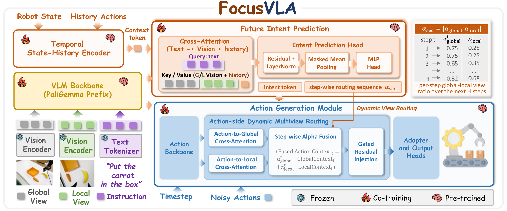
- 多模态输入与骨干编码：系统接收多视角图像、语言指令、机器人状态及动作历史，经 $\pi_{0.5}$ 骨干提取视觉-语言特征。这些特征作为上下文基础，同时流向意图预测分支与动作生成主干，为后续动态路由提供原始表征。
- Future Intent Bridge（未来意图桥接）：利用跨模态注意力编码上下文，预测未来 $H$ 步动作意图序列 $I_t$。每个时间步意图值 $i_t^{(k)} \in [0,1]$ 量化局部交互导向概率。通过弱监督标签（基于夹爪闭合或低速运动自动生成）以 BCE 损失训练，并将意图聚合为 Chunk 级 Token $z_{\mathrm{intent}}$，经线性映射 $f_{\mathrm{route}}$ 生成全局/局部路由权重 $\alpha^{(k)} = [\alpha_g^{(k)}, \alpha_l^{(k)}]$。
- Action-Side Dynamic Routing（动作侧动态路由）：在动作生成阶段实施非侵入式调制。动作特征作为 Query，分别与全局和局部视觉特征进行 Cross-Attention 得到上下文 $c_g^{(k)}$ 和 $c_l^{(k)}$。利用预测权重 $\alpha^{(k)}$ 加权融合为 $c^{(k)} = \alpha_g^{(k)} c_g^{(k)} + \alpha_l^{(k)} c_l^{(k)}$，并通过残差连接注入动作特征流，实现自适应多视角特征调制。
进入深读卡片查看完整方法与千问问答 →
3.80VLA / 策略架构VLA模型动作专家/MoE流匹配2610.30732
SmolVLA-MoE 通过在轻量级 VLA 的动作专家 FFN 中引入稀疏 MoE 和可调权重共享专家，在保持与稠密基线相同的推理效率（~500M 激活参数）下，将 LIBERO 多任务平均成功率提升至 84.25%，为资源受限平台的高效多任务操作提供了新范式。
📐 查看论文原版模型结构图与讲解（Figure 1）
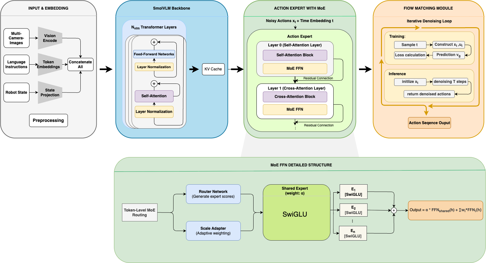
- 冻结VLM骨干：输入视觉观测与语言指令，经SmolVLM2-500M（含SigLIP编码器）处理生成上下文表征。该部分参数完全冻结以保留预训练知识，其Key-Value缓存作为后续动作专家的交叉注意力源。
- MoE-FFN动作专家：替换原稠密SwiGLU FFN为稀疏MoE结构。每个模块包含$N$个并行路由专家、1个始终激活的共享专家$E_s$及Token级路由器。仅Top-$K$专家被激活，实现计算稀疏化。
- 动态路由与缩放适配：Router通过线性投影计算得分并选取Top-$K$专家；引入AdaMoE风格缩放适配器调整权重$\hat{w}_k = w_k + s(x)$，解耦专家选择与权重分配，增强对复杂动作分布的适应性。
- 加权融合输出：最终特征由可调权重的共享专家与路由专家输出线性组合而成：$y = \alpha \cdot E_s(x) + y_{routed}(x)$。$\alpha$平衡知识继承与任务特化，随后输入Flow Matching头生成机器人动作序列。
进入深读卡片查看完整方法与千问问答 →
3.75VLA / 策略架构人形机器人VLA模型记忆2610.31166
MBZUAI 提出 WholeBodyMem，利用 SAM3 追踪物体事件并自适应选择关键历史帧注入 VLA 动作专家，在仿真和 Unitree G1 真机上将全身移动操作成功率分别提升至 72.6% 和 88.3%，有效解决了动态场景下的非马尔可夫决策难题。
📐 查看论文原版模型结构图与讲解（Figure 3）
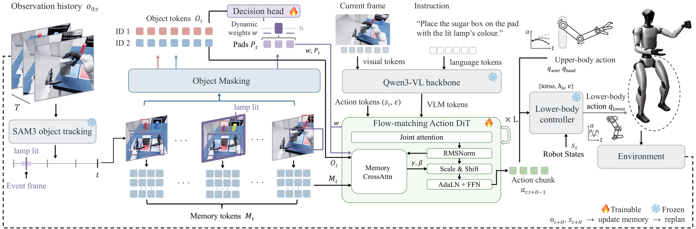
- 记忆编织器 (Memory Weaver)：VLM 接收当前图像 $I_t$、本体状态 $s_t$ 及指令 $\ell$，通过因果自适应选择机制筛选关键事件帧，生成循环记忆状态 $s_t$。该模块利用 SAM3 追踪物体并计算位移与掩码重叠率，在预算 $B_{max}=7$ 内动态填充首、中、当前及高分事件帧，确保仅使用 $t$ 之前的因果信息以保留短时线索。
- 感知器 (Perceiver)：并行处理视觉输入以提取目标表征 $g_t$。该模块聚焦于任务相关对象（如“blue cup”），将原始像素特征压缩为紧凑的目标 Token $\mathbf{O}_t$，为动作生成提供显式的空间与语义引导，解决仅依赖当前视图无法响应已离开视野事件的问题。
- 动作专家 (Action Expert)：由 $L=6$ 个 DiT 块组成，采用分层交叉注意力机制读取记忆。在每个 DiT 块中，动作 Token 首先通过 Cross-Attention 关注循环记忆状态 $s_t$ 以获取历史上下文，随后关注目标表征 $g_t$ 以定位操作对象。最终结合 FiLM 调制层输出全身动作 $\mathbf{a}_t=(a_t,\dots,a_{t+H-1})$，涵盖上半身关节目标与下半身控制指令。
进入深读卡片查看完整方法与千问问答 →
3.70VLA / 策略架构VLA模型流匹配2610.30735
本文通过对 $\pi_{0.5}$ 等六个主流流匹配 VLA 的实证研究发现，大参数量模型在单步 Euler 推理下与多步推理性能统计等价，且延迟降低最高达 4.8 倍，揭示了大规模预训练使流场自然“变直”，无需额外蒸馏即可实现低延迟部署。
📐 查看论文原版模型结构图与讲解（Figure 1）
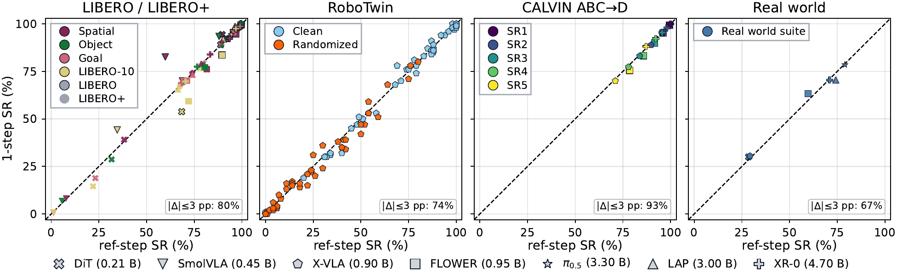
- 配对评估协议（Paired Evaluation）：针对每个（模型, 基准）组合，固定初始种子与噪声采样，分别执行参考步数（Reference Steps，如 $\pi_{0.5}$ 的 $N=10$）与单步 Euler 积分（$N=1$）。该模块确保对比仅由积分步数差异引起，排除随机性干扰，为后续统计检验提供严格受控的数据对。
- 性能差距量化（Performance Gap Quantification）：计算成功率差值 $\Delta = \mathrm{SR}_{\mathrm{ref}} - \mathrm{SR}_{1}$（单位：pp）。图中散点分布直观展示各模型在单步与多步推理下的表现差异，靠近 $x=y$ 对角线的点表明两者性能无显著统计差异，验证了单步近似的有效性。
- 统计等价性检验（TOST）：采用双单侧 t 检验（TOST）而非传统均值比较，设定实用等价边界 $\delta=3$ pp（成功率）或 $0.15$（CALVIN 链长）。该模块旨在从统计学上证明单步推理性能落在多步推理的“可接受误差范围”内，确立“一步即足”的理论依据。
- 多维影响分析（Multi-dimensional Analysis）：除成功率外，同步评估轨迹平滑度（Jerk）、动作多样性及推理延迟。该模块揭示单步 Euler 积分在大幅降低计算成本的同时，是否引入高频噪声或导致动作僵化，从而全面论证其在具身智能部署中的实际可行性。
进入深读卡片查看完整方法与千问问答 →
3.60VLA / 策略架构运行时监控VLA模型机器人操作2610.31569
Echo 通过将停止和失败信号作为动作维度的扩展进行联合去噪，并利用异步调度让状态估计引导动作生成，在无帧级标注的真机实验中显著提升了 VLA 策略的闭环鲁棒性和恢复能力。
📐 查看论文原版模型结构图与讲解（Figure 2）
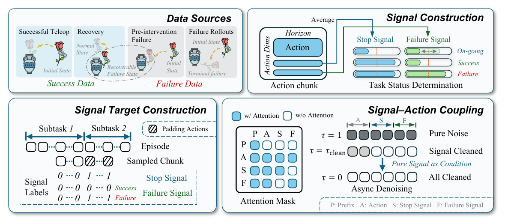
- 多源互补监督数据构造：左侧输入四种数据类型以解决无帧级标注问题。成功演示中，SS在边界处由padding mask引导至1，FS恒为0；终端失败轨迹中，SS与FS均在边界处被引导至1，且动作不参与模仿学习；干预前失败片段仅监督$SS=0, FS=1$以表征可恢复性；恢复演示则通过公式$n_t$使FS目标随进度线性下降，提供从失败到成功的过渡监督。
- 联合表示与异步去噪机制：中部核心模块将任务状态编码为停止信号（SS）和失败信号（FS），作为额外两维特征拼接到动作块$\mathbf{A}_t \in \mathbb{R}^{H \times d_a}$中。模型基于Flow Matching进行联合去噪，引入异步调度使信号去噪时间$\tau_q$快于动作时间$\tau_A$（公式12）。这使得在动作去噪后半程，模型能利用更干净的状态估计引导纠正性动作生成。
- 受控交互注意力网络：右侧Transformer内部实施受控注意力机制。动作Token同时关注SS和FS，且SS/FS也反向关注动作Token以增强条件生成。关键在于阻断SS与FS之间的直接注意力交互，防止“终止”与“失败”语义混淆，确保状态信号的独立性与准确性。
进入深读卡片查看完整方法与千问问答 →
3.50VLA / 策略架构多机协作VLA模型数据2610.30671
Co²Gen 通过去中心化 MCTS 生成带前置条件检查的可执行协作计划，自动构建示教数据微调 SmolVLA，实现了无需双遥操作即可匹配人工数据的去中心化多机及零样本人机协作能力。
📐 查看论文原版模型结构图与讲解（Figure 3）
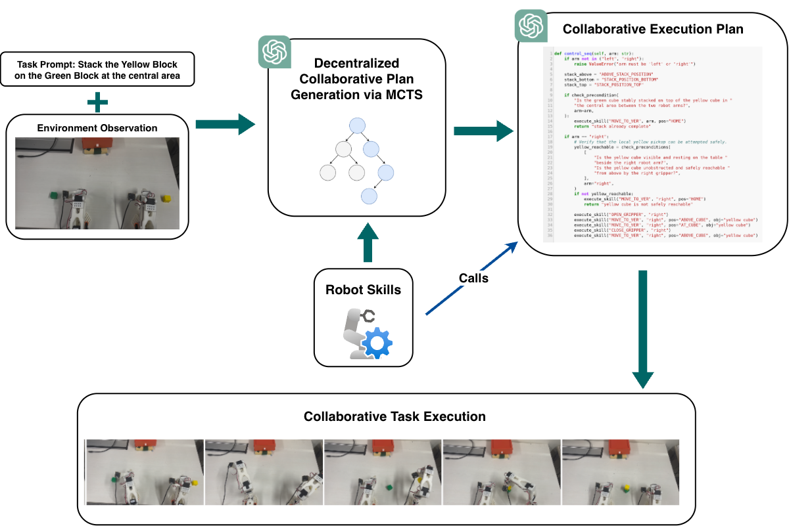
- 多模态任务与场景输入（左上）：系统接收自然语言任务指令（如“将黄色方块堆叠在中央区域的绿色方块上”）与双臂工作台顶视环境图像观测，作为协作规划的初始上下文。
- 基于MCTS的去中心化协作规划（中上）：两个基于大语言/视觉语言模型（LLM/VLM）的智能体分别扮演 Actor（提议子任务序列）与 Critic（从进度、分工合理性与前置条件三维度打分），结合预定义底层机器人技能库（Robot Skills）开展蒙特卡洛树搜索（MCTS），迭代搜索最优双臂协同调度方案。
- Python协作计划代码生成（右上）：规划器输出可执行的 Pythonic 协作计划（Collaborative Execution Plan），在代码逻辑中显式嵌入
check_precondition(...) 环境视觉前置条件查询与角色分支控制（如 if arm == "right"）以调用 execute_skill(...)，实现无显式通信的隐式状态同步。 - 闭环物理执行与数据收集（底部）：双机械臂在真实桌面环境中闭环执行该计划完成协同堆叠，经人工验证器筛选的成功轨迹存入数据集 $\mathcal{D}_{\text{task}}$ 并按机器人角色拆分以微调去中心化 VLA 策略。
进入深读卡片查看完整方法与千问问答 →
3.45VLA / 策略架构运行时监控VLA模型2610.31427
FastHarness在冻结π0.5外挂经验驱动的执行harness，用阶段记忆自适应调度GPT-6 Astra审查：熟悉阶段降低审查频率，错误时走恢复路径做局部修复或回退已验证航点；四项RoboDojo任务上审查token平均降57.2%、episode时间85.5→52.0分钟，成功率相对GPT-as-Policy从80%升到97.19%。作者来自上海交大等。
📐 查看论文原版模型结构图与讲解（Figure 2）
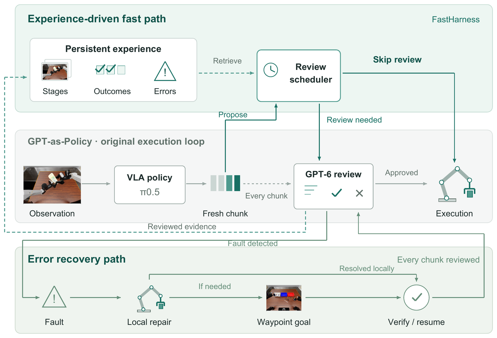
- GPT-as-Policy 主干（Gray, Middle）：作为基线执行核心，接收视觉观测 $o_t$ 与本体感觉 $s_t$，由策略网络 $\pi_\theta$ 生成动作序列 $a_{t:t+H}$。该模块负责常规控制流，但在高延迟场景下需依赖后续路径优化效率或鲁棒性。
- 经验驱动快路径（Top, Fast Path）：针对新鲜 VLA 提案，利用记忆引导调度器计算保守置信分数 $C_t$。若上下文匹配历史成功样例且满足审查间隔 $\Delta k$，则直接执行动作前缀并刷新观测，绕过冗余的 GPT-6 审查；未知状态或邻近错误触发强制审查以保障安全。
- 航点恢复路径（Bottom, Recovery Path）：在终端故障时激活，持续运行审查器检测异常。优先尝试局部修复（如重抓），失败则回溯至当前 Episode 内已验证的航点 $w^*$ 进行状态重置。确认故障消除后，系统恢复常规调度并保留错误记录以更新经验库。
进入深读卡片查看完整方法与千问问答 →
世界模型 / WAM · 1
3.85世界模型 / WAM世界模型RL后训练VLA模型2610.30814
DRILL 证明在 VLA RL 后训练中，按下游策略回报优化世界模型（即使像素 MSE 更高）比单纯追求像素保真度能带来显著的性能提升（+13.1% vs WMPO），为构建“对控制有用”而非“看起来像”的世界模型提供了理论与实证支持。
📐 查看论文原版模型结构图与讲解（Figure 1）
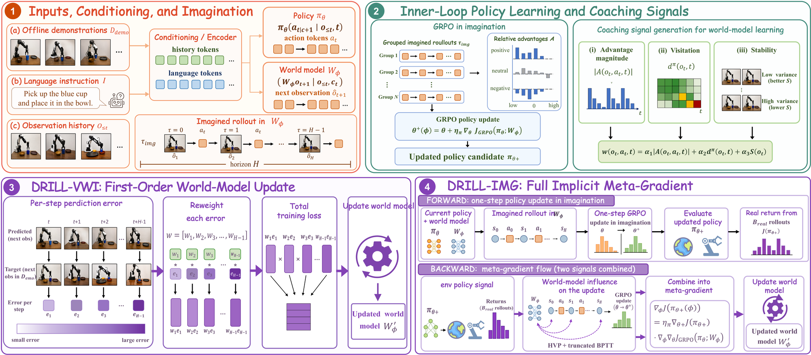
- 内层想象优化 (Inner Imagined GRPO)：VLA策略 $\pi_\theta$ 在当前世界模型 $\mathcal{W}_\phi$ 生成的想象轨迹上执行一步GRPO更新，得到临时策略 $\theta^+$。该模块输入为离线演示数据与当前模型参数，输出为经过策略梯度优化的中间策略，旨在利用模型内部信号快速提升策略性能。
- 外层信用分配 (Outer Credit Assignment)：将策略改进信号反馈至世界模型以最大化真实环境回报 $J(\pi_{\theta^+})$。图中展示两种变体路径：DRILL-VWI 直接复用想象轨迹，构建带符号的访问加权动力学更新；DRILL-IMG 则通过可微分 rollout 对内部GRPO目标进行反向传播，实现端到端元梯度优化。
- 双路反馈机制 (Dual Feedback Paths)：DRILL-VWI 作为轻量级代理，利用策略访问频率、组相对优势及模型置信度重加权像素MSE损失，无需额外真实交互；DRILL-IMG 则结合少量真实仿真 rollout ($B_{real}=30$) 计算外层梯度，更忠实于目标函数但计算成本较高。两者共同构成双层优化闭环，动态修正世界模型偏差以指导策略学习。
进入深读卡片查看完整方法与千问问答 →
导航 / VLN / SLAM · 7
3.20导航 / VLN / SLAMSLAM3D重建2610.31635
HiP3R 通过分层位姿图（块级 Sim(3) 布局 + 帧级 SE(3) 共享相机）无需训练即可将 VGGT-Omega 的长程轨迹误差降低 74%，为前馈式 3D 视觉模型的长时程一致性提供了高效、通用的后处理方案。
📐 查看论文原版模型结构图与讲解（Figure 2）
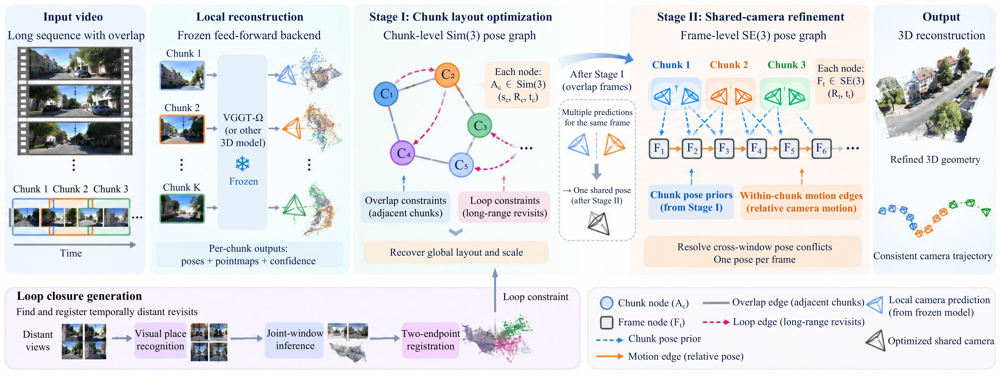
- 分块前馈局部重建（Input & Local Reconstruction）：输入长序列视频被划分为重叠窗口子块（Chunk $1,\dots,K$），独立送入冻结的前馈3D重建后端（如 VGGT-$\Omega$），输出各块局部坐标系下的相机位姿、稠密点图与像素级置信度。
- Stage I：块级 $\mathrm{Sim}(3)$ 布局优化（Chunk Layout Optimization）：以每个子块为节点维护相似变换 $A_c = (s_c, R_c, t_c) \in \mathrm{Sim}(3)$；相邻子块通过置信度加权 IRLS 建立重叠约束边（蓝色实线），同时底部分支通过视觉地点识别（VPR）、联合窗口推理与双端点配准构建长程回环边（粉色虚线），渐进式激活并优化全局布局与尺度一致性。
- Stage II：帧级共享相机 $\mathrm{SE}(3)$ 精修（Shared-camera Refinement）：固定全局块布局后，为每个物理帧 $i$ 分配唯一的共享相机位姿节点 $F_i = (R_i, t_i) \in \mathrm{SE}(3)$，联合 Stage I 投影的一元块位姿先验因子（蓝色虚线）与块内连续帧相对运动因子（橙色实线）进行非线性优化，消除重叠窗口间的位姿冲突并输出一致的相机轨迹与三维点云。
进入深读卡片查看完整方法与千问问答 →
3.15导航 / VLN / SLAMSLAM拓扑图导航2610.31432
稀疏拓扑度量图用可通行锚点上的紧凑几何描述子与距离加权边表示室内结构，经图匹配网络联合节点几何与邻域连通做跨会话对应，支撑未知初位姿下的点目标导航。Gibson成功率77.1%、场景变化下40.0%，内存较点级表示降两个数量级以上。首尔国立大学。
📐 查看论文原版模型结构图与讲解（Figure 2）
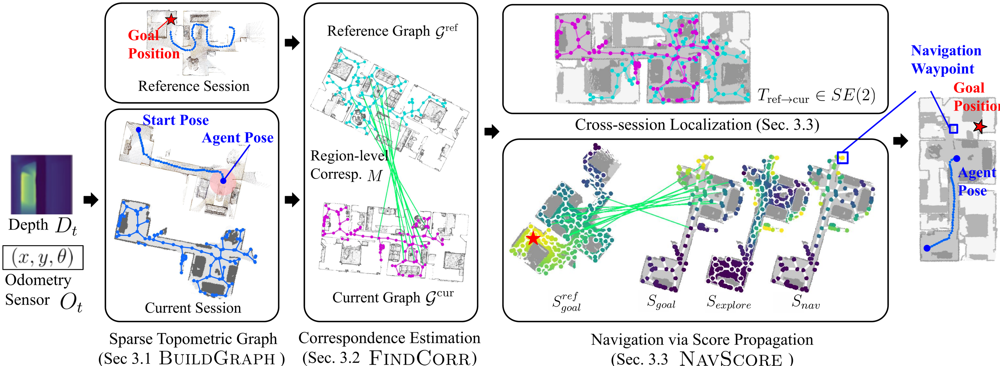
- 稀疏拓扑度量图构建（Sec 3.1 Graph Building）：智能体接收实时深度图 $D_t$ 与里程计位姿 $O_t=(x,y,\theta)$ 构建局部可通行地图，利用中轴分解（Medial-Axis Decomposition）提取稀疏拓扑节点，并聚合节点局部3D点云提取旋转等变几何描述子，结合可通行测地距离边权分别维护先验参考图 $\mathcal{G}^{\text{ref}}$ 与当前在线图 $\mathcal{G}^{\text{cur}}$。
- 跨会话图匹配对应估计（Sec 3.2 FINDCORR）：在未知初始位姿与部分视野重叠下，利用图匹配网络结合 Sinkhorn 最优传输联合节点几何特征与拓扑邻域连通结构，预测两图间的区域级节点对应集合 $M$。
- 重定位与分数传播导航（Sec 3.3 NAVSCORE）：一方面基于匹配集 $M$ 经 RANSAC 估计二维刚体变换 $T_{\text{ref}\to\text{cur}} \in \mathrm{SE}(2)$ 实现跨会话全局对齐；另一方面将参考图上的目标距离衰减分数 $S_{\text{goal}}^{\text{ref}}$ 沿对应边 $M$ 传播至当前图得到 $S_{\text{goal}}$，并与前沿探索分数 $S_{\text{explore}}$ 加权融合为综合导航得分 $S_{\text{nav}}$，选取最高分节点作为下一导航航点引导智能体抵达目标 $g$。
进入深读卡片查看完整方法与千问问答 →
3.10导航 / VLN / SLAMVLN语义导航机器人操作2610.30606
CMAR-search通过构建功能三维场景图（F3DSG）并融合常识与记忆的分层推理机制，在动态交互环境中实现了显著优于MoMa-LLM等基线的目标搜索成功率与效率，为具身智能中的语义导航提供了新的结构化表示范式。
📐 查看论文原版模型结构图与讲解（Figure 2）
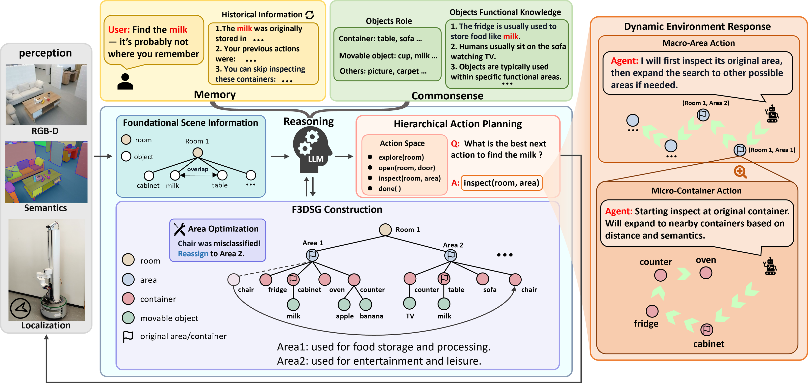
- 记忆与常识增强的F3DSG构建（左及中下）：系统融合 RGB-D、语义分割与定位感知，结合历史记忆（Memory，记录目标曾出现位置与已排查容器）和常识库（Commonsense，区分容器与可移动物体角色及功能先验），构建“房间—功能区（Area 1餐饮存储、Area 2休闲娱乐）—容器—可移动物体”四层功能三维场景图（F3DSG），并通过两阶段区域优化（Area Optimization）合并单容器区及修正误分类节点。
- 宏观—微观分层动作规划（中右）：大语言模型（LLM）在宏观层（Macro-Area）从动作空间（
explore、open、inspect、done）中推理目标区域级指令；微观层（Micro-Container）则结合路径距离 $\tilde{D}_i$、SBERT 语义相似度 $\tilde{P}_i$ 与漏检风险因子，按复合评分 $S_i = \alpha\tilde{D}_i + \beta\tilde{P}_i + \gamma\prod_{k\neq i}(1-P_k)$ 排序区域内待检容器序列。 - 动态环境响应与重定位（右侧）：当目标因环境动态被移动时，智能体优先回访历史记忆中的原始区域与容器；若未命中则利用功能语义常识外推至次优关联区域与邻近容器，并实时更新 F3DSG 完成高效重定位。
进入深读卡片查看完整方法与千问问答 →
3.05导航 / VLN / SLAM可通行性导航2610.30994
TRACE通过CLIPSeg正负Prompt证据融合生成稠密可通行图，经分位数拟合提取平滑边界作为NMPC软约束，在瑞典真机林地中实现了对隐性路径线索的鲁棒跟踪，Stable地形IoU达0.67。
📐 查看论文原版模型结构图与讲解（Figure 1）
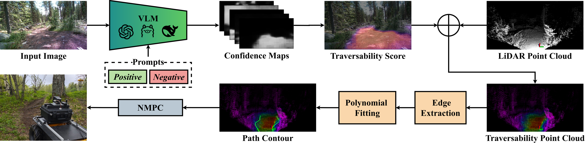
- 正负提示VLM感知与证据融合（左上至中上）：前视 RGB 图像输入视觉语言分割模型（VLM，如 CLIPSeg），分别结合正向提示词集（Positive Prompts，如小径、平地）与负向提示词集（Negative Prompts，如倒木、密植）生成多张像素级置信图；随后基于 Beta 分布证据融合机制累加正负证据 $\alpha^+,\alpha^-$，由期望概率 $E$ 与认知不确定性 $U$ 计算稠密可通行性得分图 $C = E(1-U)$。
- 3D点云投影与分位数边界提取（右上至右下）：将二维可通行性得分图与 3D LiDAR 点云配准融合，生成带权可通行点云（Traversability Point Cloud）；滤除低置信点后沿前进方向 $X$ 轴分箱（Edge Extraction），统计各箱横向 $Y$ 坐标的 5% 与 95% 分位数提取左右边界候选点，并通过三次样条或正则化多项式拟合（Polynomial Fitting）生成平滑路径轮廓曲线 $p_L(x), p_R(x)$。
- NMPC软障碍约束控制（左下）：将拟合出的左右连续边界轮廓作为软障碍约束（Soft Barrier Constraints）嵌入非线性模型预测控制（NMPC）优化问题中，实时求解满足运动学约束的安全控制指令驱动无人车穿越复杂林道。
进入深读卡片查看完整方法与千问问答 →
3.00导航 / VLN / SLAMVLN无人机2610.30609
KinoUAV把动力学约束写进UAV视觉语言导航的数据与评测：分层动力学A*按加速度动作生成轨迹并标注方向自由空间距离（DFD）；KinoUAV-Agent高层规划航点、低层用预测DFD选安全加速度，Cruise–Seek先区域后搜目标。Test Seen成功率89.3%、碰撞率6.0%。作者来自中科院空天信息创新研究院等。
📐 查看论文原版模型结构图与讲解（Figure 5）
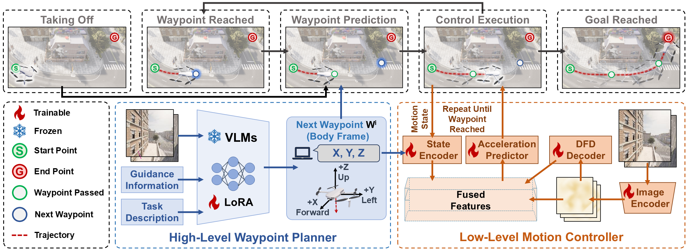
- 五阶段闭环导航运行流（顶部）：展示无人机从起点 $S$（绿色）到终点 $G$（红色）的“巡航—搜寻（Cruise-Seek）”执行闭环，依次经历起飞、到达当前航点、预测下一蓝点航点、执行底层动力学控制并循环推进直至抵达目标。
- 高层航点规划器（左下蓝色虚线框 High-Level Waypoint Planner）：以前视与下视双视角 RGB 图像、阶段引导信息（方向/距离）及任务文本描述为输入，经主干权重冻结（雪花图标）并挂载可训练 LoRA 适配器（火焰图标）的视觉语言模型（VLM），直接预测无人机体坐标系（$+X$前、$+Y$左、$+Z$上）下的下一目标航点 $W^i=(X,Y,Z)$。
- 低层动力学运动控制器（右下橙色虚线框 Low-Level Motion Controller）：可训练的状态编码器（State Encoder）编码当前运动状态与目标航点 $W^i$，图像编码器（Image Encoder）提取双视角特征并由 DFD 解码器（DFD Decoder）显式预测方向自由空间距离（DFD）以表征局部无碰几何；多模态特征融合后输入加速度预测器（Acceleration Predictor），结合预测 DFD 安全约束高频输出6自由度离散安全加速度指令驱动无人机飞向 $W^i$。
进入深读卡片查看完整方法与千问问答 →
2.80导航 / VLN / SLAMSLAM定位2610.30186
SIGNN++ 通过引入傅里叶边特征和 RANSAC 姿态精化模块，显著提升了 GNN 星图识别方法在真实地面夜间环境中的鲁棒性与解算率，为 GNSS 拒止下的绝对定位提供了可靠的视觉解决方案。
📐 查看论文原版模型结构图与讲解（Figure 2）
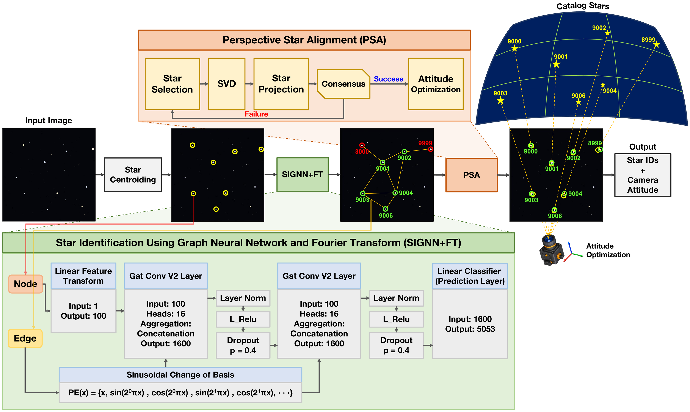
- 端到端星图识别与定姿主干（中部）：输入地基夜空图像经灰度重心法（CoG）提取星点质心并由孔径测光估算表观星等，构建以星点为节点、$1^\circ\text{--}4^\circ$角距内星对为边的几何星图；先由 SIGNN+FT 图神经网络输出初步恒星目录 ID，再经 PSA 几何对齐模块滤除外点并输出精化星体 ID 与相机三维姿态。
- 傅里叶边编码图注意力网络（底部绿色框 SIGNN+FT）：节点星等特征经线性层映射为 100维向量，输入第1层16头 GATv2 卷积（拼接聚合为 1600维，配 LayerNorm、LeakyReLU 与 $p=0.4$ Dropout）；一维星间角距边特征 $x$ 经傅里叶正余弦位置编码 $PE(x)=\{x, \sin(2^0\pi x), \cos(2^0\pi x), \dots\}$ 升维以消除深度网络谱偏差，与节点特征共同输入第2层16头 GATv2 卷积，最终由线性分类层预测 5053 类恒星 ID 概率分布。
- RANSAC透视星对齐精化（顶部橙色框 PSA）：按 GNN 置信度采样星对并通过奇异值分解（SVD）求解初始三维旋转矩阵，将星表参考星投影至像平面检验内点一致性（Consensus）；若未达标则重新采样，若通过则联合非线性优化相机视场角（FOV）与旋转矩阵。
进入深读卡片查看完整方法与千问问答 →
2.70导航 / VLN / SLAMSLAM空间2610.30774
Stanford团队通过多源数据集基准测试发现，SuperPoint+LightGlue凭借16ms/帧的速度和全序列跟踪鲁棒性成为月球VO前端的最佳选择，且合成数据上的SIFT优势无法迁移至真实月球场景，强调了真实世界验证在空间SLAM前端选型中的决定性作用。
📐 查看论文原版模型结构图与讲解（Figure 1）
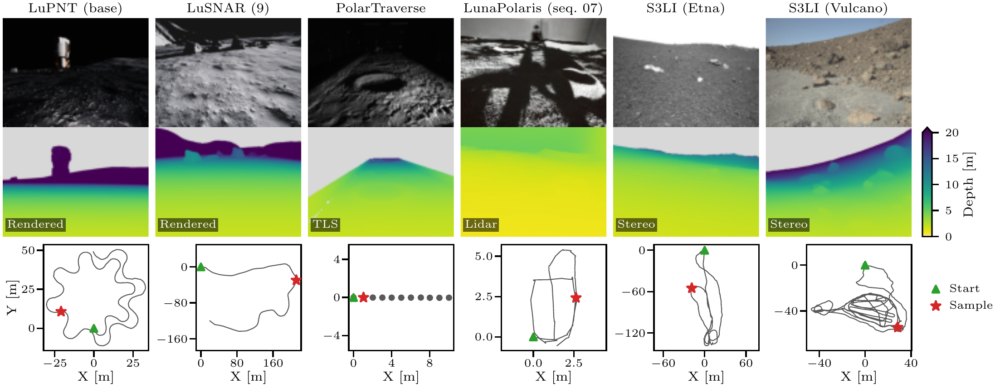
- 三层级多源月球视觉基准架构（按列从左至右）：涵盖高保真物理渲染合成层（LuPNT base、LuSNAR 9）、室内月球光学模拟试验台层（PolarTraverse、LunaPolaris seq. 07）以及地球火山地貌实地类比层（S3LI Etna、S3LI Vulcano）共6个代表性序列。
- 漫游车视角退化图像输入（第一行）：展示单目/双目相机采集的原始灰度或彩色帧，覆盖低纹理月壤、散落岩石、极区低太阳高度角造成的长阴影与极端高动态明暗对比等典型月面视觉挑战，作为经典（SIFT/ORB/AKAZE/BRISK）与学习（SuperPoint+SuperGlue/LightGlue）前端特征组合的统一输入。
- 多源参考深度真值与共视几何量化（第二行）：展示与图像像素对齐的参考深度图（色标范围 $0\text{--}20\,\mathrm{m}$，天空与无效像素标灰），分别源自渲染真值（Rendered）、地面激光扫描（TLS）、机载 LiDAR 或立体匹配（Stereo），用于将特征点反投影至三维空间以量化图像对视角重叠率 $\omega$、中位三角化角 $\bar{\alpha}$、对极精度（EP）及 RANSAC PnP 相对位姿。
- 俯视真值轨迹与下游任务映射（第三行）：给出 XY 平面漫游车真值轨迹（绿三角为起点 Start，红星为采样帧 Sample），支撑开环视觉里程计相对轨迹误差（ATE/$L$）与重访回环几何验证的跨尺度评测。
进入深读卡片查看完整方法与千问问答 →
灵巧操作 / 接触 · 2
3.55灵巧操作 / 接触灵巧手接触机器人操作2610.31299
PiHand先训跟踪mocap的物理手–物专家，再蒸馏为物体轨迹条件的交互VAE先验，最后在有界潜空间残差探索中用单一跟踪奖励生成桌面操纵；未见物体上相对最强基线GRAB/DexYCB成功率+14.0/+16.9pp，并迁移到接物与双手交接。作者来自图宾根大学、MPI-INF、Berkeley等。
📐 查看论文原版模型结构图与讲解（Figure 2）
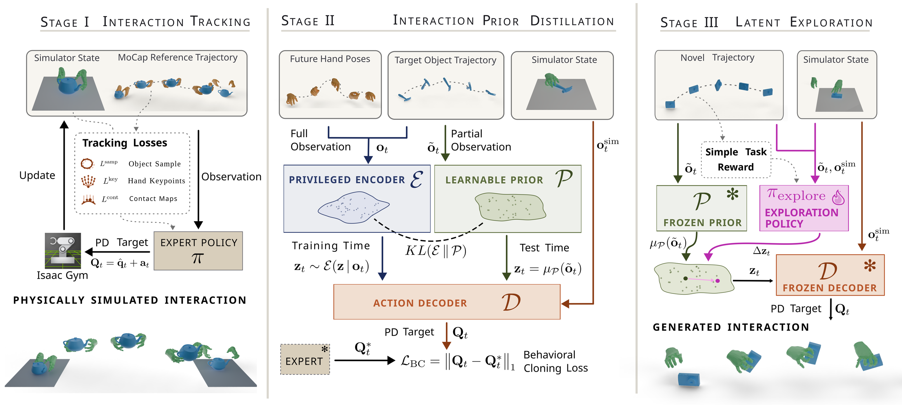
- Stage I：物理交互专家跟踪（Interaction Tracking）：将仿真器状态与动作捕捉（MoCap）参考轨迹输入专家策略 $\pi$，输出积分残差PD目标 $\mathbf{Q}_t = \hat{\mathbf{q}}_t + \mathbf{a}_t$ 驱动 Isaac Gym 物理仿真，并联合优化物体表面采样损失 $L^{\text{samp}}$、手部关键点损失 $L^{\text{key}}$ 与接触图损失 $L^{\text{cont}}$ 获取高保真手物交互轨迹。
- Stage II：条件交互先验蒸馏（Interaction Prior Distillation）：全量观测 $\mathbf{o}_t$（含未来手姿、目标物体轨迹与仿真状态）经特权编码器 $\mathcal{E}$ 采样潜变量 $\mathbf{z}_t \sim \mathcal{E}(\mathbf{z}|\mathbf{o}_t)$，而仅含物体轨迹与状态的局部观测 $\tilde{\mathbf{o}}_t$ 输入可学习条件先验 $\mathcal{P}$ 输出均值 $\boldsymbol{\mu}_{\mathcal{P}}(\tilde{\mathbf{o}}_t)$；两者通过 $\mathrm{KL}(\mathcal{E} \parallel \mathcal{P})$ 对齐，并由动作解码器 $\mathcal{D}$ 结合 $\mathbf{o}_t^{\text{sim}}$ 以行为克隆损失 $\mathcal{L}_{\text{BC}} = \|\mathbf{Q}_t - \mathbf{Q}_t^*\|_1$ 拟合专家动作 $\mathbf{Q}_t^*$。
- Stage III：有界潜空间残差探索（Latent Exploration）：面对新物体与目标轨迹，冻结先验 $\mathcal{P}^*$ 与解码器 $\mathcal{D}^*$，仅靠单一任务奖励训练探索策略 $\pi_{\text{explore}}$ 输出有界潜残差 $\Delta\mathbf{z}_t$（受界 $B$ 约束），叠加于 $\boldsymbol{\mu}_{\mathcal{P}}(\tilde{\mathbf{o}}_t)$ 得到 $\mathbf{z}_t$ 并解码为控制指令 $\mathbf{Q}_t$。
进入深读卡片查看完整方法与千问问答 →
3.20灵巧操作 / 接触接触机器人操作VLN2610.30786
EBV-CAN提出了一种基于全局静态地图缓存和空间语义查询的视觉语言策略，在真机柔性内窥镜导航中实现了76.25%的成功率，并证明了通过中间路径监督可有效解决动作模仿中的闭环失败问题。
📐 查看论文原版模型结构图与讲解（Figure 4）
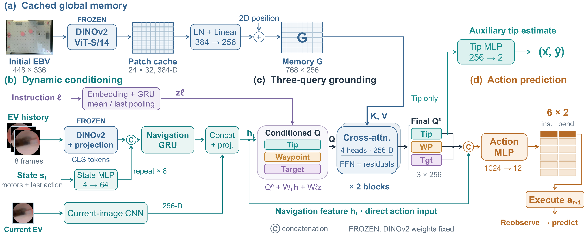
- (a) 缓存全局空间记忆（Cached Global Memory）：初始全局鸟瞰图（Initial EBV，$448\times 336$）经冻结 DINOv2 ViT-S/14 提取 $24\times 32$ 个 384维 Patch 特征，经 LayerNorm、线性投影（$384\to 256$）并叠加 2D 位置编码后，缓存为固定全局记忆矩阵 $G \in \mathbb{R}^{768\times 256}$ 作为键值对 $(K,V)$。
- (b) 动态条件编码（Dynamic Conditioning）：语言指令 $l$ 经词嵌入与 GRU 池化生成语义向量 $z_l$；近8帧内镜视图（EV）的冻结 DINOv2 CLS 特征与 MLP 编码的电机状态 $s_t$ 拼接后输入导航 GRU，再与当前 EV 帧的 CNN 特征融合投影为 256维动态导航特征 $h_t$。
- (c) 三查询空间接地（Three-query Grounding）：引入尖端（Tip）、下一导引航点（WP）与指令目标（Tgt）三个可学习查询，按 $Q^0 + W_h h_t + W_l z_l$ 注入动态条件后，经2层4头残差交叉注意力读取全局记忆 $G$，输出空间接地表征 $Q^2 \in \mathbb{R}^{3\times 256}$。
- (d) 动作预测与辅助监督（Action Prediction）：Tip Token 单独经 MLP（$256\to 2$）回归尖端坐标 $(\hat{x},\hat{y})$ 提供显式空间监督；$Q^2$ 的三个 Token 与 $h_t$ 拼接为 1024维向量，经动作 MLP（$1024\to 12$）预测未来6步双电机指令（插入与弯曲），闭环仅执行首步动作 $a_{t:1}$。
进入深读卡片查看完整方法与千问问答 →
数据 / 评测 / Benchmark · 2
3.40数据 / 评测 / Benchmark运行时监控VLA模型Benchmark2610.31613
Progress Probes（P²）用线性探针从π0.5内部激活解码任务进度，以相对标称进度的滞后做运行时失败监测；仅需成功示教、无需失败数据或外部VLM。VLABench与Franka真机上失败检测AUROC约0.79/0.78，延迟约0.026ms，与SAFE、Robometer竞争或更优。作者来自CMU与Cornell。
📐 查看论文原版模型结构图与讲解（Figure 1）
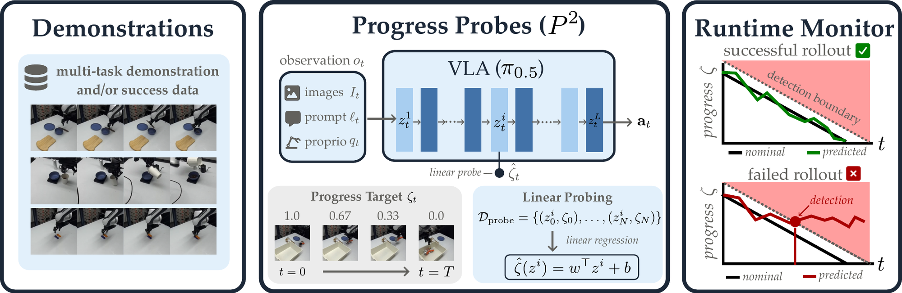
- 进度标签构建（Progress Labeling）：仅利用成功演示轨迹，将时间步 $t$ 映射为归一化剩余时间 $\zeta_t = 1 - t/T$ 作为监督信号。该模块确立了“进度即剩余时间”的线性假设，无需失败样本即可生成稠密奖励代理，为后续探针训练提供无偏基准。
- 内部激活提取（Activation Extraction）：从预训练视觉-语言-动作模型 $\pi_{0.5}$ 的前向传播中截取中间层特征 $z_t^i$。此过程复用策略推理时的计算图，不引入额外前向开销，直接捕获多模态输入在潜空间中的语义表征，作为进度预测的原始特征源。
- 线性探针拟合（Linear Probe Fitting）：对提取的特征 $z_t^i$ 训练轻量级线性回归器 $\phi(\cdot)$，建立从内部状态到进度标签 $\zeta_t$ 的映射关系。该模块通过最小化均方误差优化权重，实现从高维潜变量到低维标量进度的解耦解码，具备极强的可解释性与低计算复杂度。
- 运行时异常监测（Runtime Monitoring）：实时计算监测分数 $s = \hat{\zeta}(o_t) - (1 - t/\mu_T)$，其中 $\mu_T$ 为成功轨迹平均长度。当估计进度显著落后于标称进度（即 $s > \delta$）时触发报警，该机制仅惩罚执行迟滞而不干扰快速成功路径，实现零开销的在线失败检测。
进入深读卡片查看完整方法与千问问答 →
3.30数据 / 评测 / BenchmarkBenchmark机器人操作空间操作2610.31064
AstroBench 通过零重力自由漂浮捕获基准测试，揭示了冻结的 $\pi_{0.5}$ DROID 策略在动态目标上仅 2% 的极低成功率，凸显了通用 VLA 模型在接触敏感空间操作中的泛化瓶颈。
📐 查看论文原版模型结构图与讲解（Figure 1）
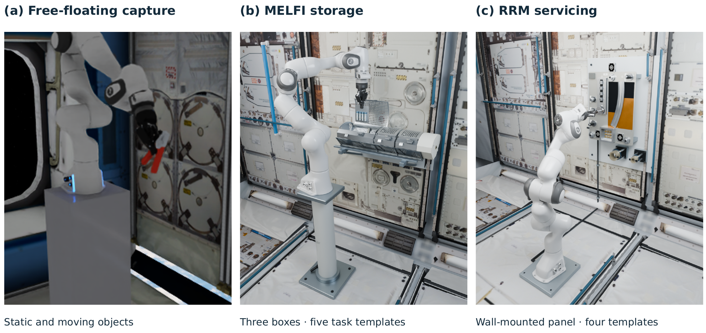
- 因子化空间操作基准概览：AstroBench 将每个空间站微重力操作实例形式化为七元组 $e=(\tau,o,z,x_0,c,\ell,\nu)$，显式绑定任务模板、三维刚体/硬件资产、目标槽位、初始运动状态、相机上下文、语言指令与执行配置。
- (a) 自由漂浮目标捕获（Free-floating Capture）：固定基座的 Franka Panda 机械臂（配 Robotiq 夹爪）在舱内微重力环境下拦截无支撑漂浮刚体（涵盖静态、平移漂移、慢速翻滚与快速翻滚四类初始状态 $x_0$）；图中展示了冻结 $\pi_{0.5}$ 策略的闭环捕获轨迹，系统通过接触与夹爪闭合联合定义的捕获谓词 $C_k$ 判定首次成功捕获时刻。
- (b) MELFI 低温样本存储操作（MELFI Storage）：复刻国际空间站冷存架，包含混合抽屉、铰链翻盖、弹力约束带与四联样本管卡槽，构建抽屉/盒盖开合及样本卡插入、提取与转移共5类受限几何任务模板。
- (c) RRM 在轨维护面板操作（RRM Servicing）：机械臂正对壁挂式维护面板，操作 FDV1 加注阀帽、$3\times 3$ SMA 接口阵列、防脱紧固螺钉及工具接收座共4类精细维护模板。
进入深读卡片查看完整方法与千问问答 →
青稞速报 / 开源模型发布 · 3
3.00青稞速报 / 开源模型发布青稞速报开源发布UNITASWAM青稞
只有 1.7B 参数，却在双臂操作基准上超过 6B、8B 模型；四个操作基准，全部拿下论文对比方法中的最高整体成功率。 世界动作模型（World Action Model，WAM）的竞争，迎来了一条值得关注的新路线。 当不少研究还在借助预训练视频模型学习动作与未来画面时，香港中文大学（深圳）团队推出
3.00青稞速报 / 开源模型发布青稞速报开源发布GroundingPIVLAWAM青稞
从VLA到WAM，主流的模型都在通用的基座模型作为base model去改造，但通用基座模型真的靠谱吗？ 所谓的具身基模又真的训对了吗？ 当一个基座模型被改造成 VLA、承担 System 1 的执行角色时，最需要的究竟是什么能力或数据？ 人类整理拥挤的桌面，需要先找到杯子和把手，再决定怎样抓取——
3.00青稞速报 / 开源模型发布青稞速报开源发布EmbodiedRSI青稞
近年来，机器人学习主要依赖模仿学习：用大量专家示范数据训练策略。但换个任务、变个环境，往往就要重新采集数据、重新训练——成本高，扩展性也差。 更麻烦的是，机器人基础模型在物体位置或任务指令变化时，性能会明显下降；想要进一步改进，又需要大量遥操作数据做后训练。 那么问题来了：能不能让具身智能体像人一样